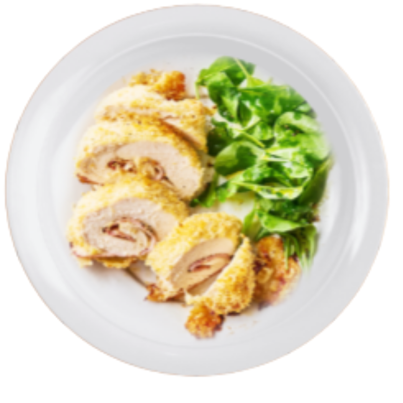

INGREDIENTS
- 4 chicken breasts
- 8 slices Swiss cheese
- 8 slices deli ham
- 2 large eggs, beaten
- 1 c. all-purpose flour
- 2 c. panko bread crumbs
- Kosher salt
- Freshly ground black pepper
- 4 tbsp. melted butter
- 1 tsp. dried oregano

Chicken Cordon Bleu

INSTRUCTION
- Preheat oven to 400° and line a large baking sheet with parchment paper. Place a chicken breast between two pieces of plastic wrap on a cutting board and flatten to a " thickness with a meat mallet or rolling pin. Top chicken with 2 slices of cheese, then 2 slices of ham. Starting at the top of the breast, roll up tightly and secure with toothpicks. Repeat with remaining chicken breasts.
- Working with one at a time, roll chicken first in flour, then eggs, then panko mixture, pressing to coat. Place on prepared baking sheet. Bake until golden and cooked through, 30 minutes.
- Remove toothpicks from chicken and serve with sauce.